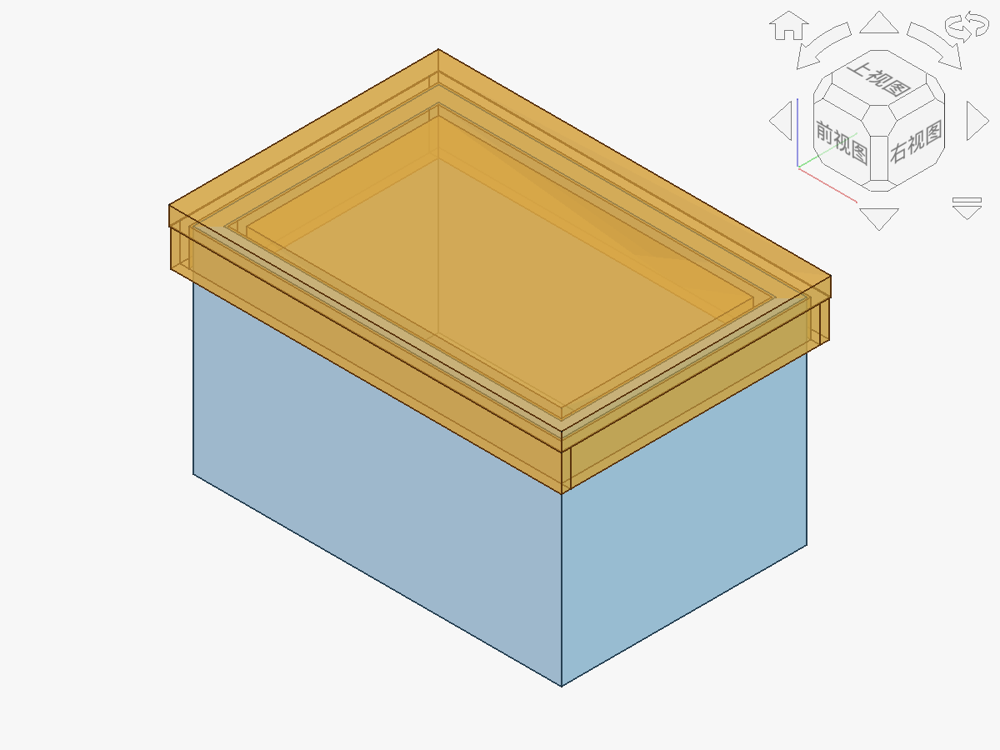

装配不是把两个实体移到一起。盒盖插入边必须进入真实槽口；槽宽 = 插入边厚度 + 两侧间隙。
# 根据插入边厚度自动计算槽宽
wall_T = 2.5
clearance = 0.35
groove_W = wall_T + 2 * clearance
groove_D = 6.0
print("环形槽宽 =", groove_W, "mm")
print("环形槽深 =", groove_D, "mm")
groove_W会自动更新，避免盒沿和槽口口径不一致。groove_W控制横向配合松紧，groove_D控制插入深度和闭合定位，两者不能混用。
真实双边槽口与打印装配间隙